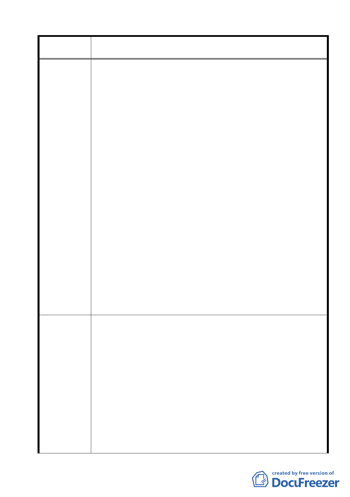

案名
建議辦法
變更臺北市士林區陽明山山仔后地區第二種住宅區為特定住宅區
細部計畫案
地區第二種住宅區為特定住宅區細部計劃案，顯然係以
包藏叵心，暗度陳倉手法為配合民營化之台銀需求，純
以 在 商 言 利 考 量 ， 將 原 37.37 公 頃 面 積 夾 帶 擴 大 為 73.6
公頃，目的只在染指原美軍宿舍群之巨大爆利，然此一
宿舍群當年土地取得來源與過程，居民多諱言實為強
徵，如供國有，則愛國保民，匹夫有責，尚能勉強吞
忍。
但若任令曲解或不幸有勾結情事，坐令今日民營之
台
銀不當乾坤挪移，收此暴利，濫行興建營利建築，破
壞
自然景觀、人文歷史，則熟可忍而是之不可忍也。
3. 按 陽 明 山 區 為 台 北 盆 地 之 東 北 、 南 天 然 屏 障 ， 歐 亞 褶 曲
帶上隆起之秀麗山脈，山巒起伏，林木蓊鬱，蔚為第一
個國家公園。又為台北市水源水質保護區，提供清新空
氣無窮資源，豈宜在此過度開發，若一經謬誤都市計
畫，必將貽禍子孫，留罵萬年。
4. 又 此 變 更 之 都 計 ， 果 若 真 有 人 謀 不 臧 ， 包 藏 禍 心 ， 假 公
而行勾結之實，一旦放寬為特定住宅區，則未來旅館、
飲食、餐飲等雜亂進入，其所造成之交通、飲水、用電
等
供應，噪音、污染垃圾等問題，恐非市府所能承擔與
輕
易解決。
5.連雅堂台灣通史序有云：「國可滅，而史不可滅」。此段美軍協
防台灣史，美軍宿舍在陽明山史，及其陳跡文物景觀，實有國人
愛恨交集，不可忘不能忘之特殊意義。豈可令其因短視近利，或
有不軌勾當，而致灰飛煙滅，而其核可者竟為大有為且英明剛正
不阿的鈞長。
1.正視本市陽明山山仔后美軍宿舍群聚落之文化歷史意義與價
值，闢整為多元文化園區。
2.請委託有良心有道德，且有責任感有能力之專家學者，務實參
採居民感受與意見，全盤規劃原美軍宿舍區為多功能之文化歷
史保護區。其地形地貌儘量予以保存，原有道路系統，有年歲
之樹木，完全保留，妥善規劃修葺。其內容可包含：
（1）多功能文化活動中心，提供各種才藝、土風舞、國術、運動，
及居民會議交誼場所。
（2）設置幼稚園，提供陽明山居民幼兒早期教育場所。
（3）設置草山文化歷史室。
（4）提供草山 地區土特產展售中心，可供居民申請展售草山特
有花木、食物（不含外來品）
（5）設立醫院或簡易醫院，針對陽明山地區之毒蛇、毒蜂、蜈蚣、
46